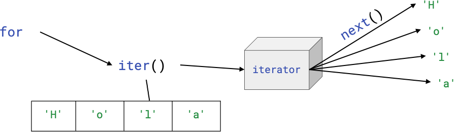

<!DOCTYPE html>
<html lang="en">
  <head>
    <meta charset="utf-8" />
    <meta name="viewport" content="width=device-width, initial-scale=1.0, maximum-scale=1.0, user-scalable=no" />

    <title></title>
    <link rel="stylesheet" href="dist/reveal.css" />
    <link rel="stylesheet" href="dist/theme/iph.css" id="theme" />
    <link rel="stylesheet" href="plugin/highlight/spyder.css" />
	<link rel="stylesheet" href="css/layout.css" />
	<link rel="stylesheet" href="plugin/customcontrols/style.css">


    <script defer src="dist/fontawesome/all.min.js"></script>

	<script type="text/javascript">
		var forgetPop = true;
		function onPopState(event) {
			if(forgetPop){
				forgetPop = false;
			} else {
				parent.postMessage(event.target.location.href, "app://obsidian.md");
			}
        }
		window.onpopstate = onPopState;
		window.onmessage = event => {
			if(event.data == "reload"){
				window.document.location.reload();
			}
			forgetPop = true;
		}

		function fitElements(){
			const itemsToFit = document.getElementsByClassName('fitText');
			for (const item in itemsToFit) {
				if (Object.hasOwnProperty.call(itemsToFit, item)) {
					var element = itemsToFit[item];
					fitElement(element,1, 1000);
					element.classList.remove('fitText');
				}
			}
		}

		function fitElement(element, start, end){

			let size = (end + start) / 2;
			element.style.fontSize = `${size}px`;

			if(Math.abs(start - end) < 1){
				while(element.scrollHeight > element.offsetHeight){
					size--;
					element.style.fontSize = `${size}px`;
				}
				return;
			}

			if(element.scrollHeight > element.offsetHeight){
				fitElement(element, start, size);
			} else {
				fitElement(element, size, end);
			}		
		}


		document.onreadystatechange = () => {
			fitElements();
			if (document.readyState === 'complete') {
				if (window.location.href.indexOf("?export") != -1){
					parent.postMessage(event.target.location.href, "app://obsidian.md");
				}
				if (window.location.href.indexOf("print-pdf") != -1){
					let stateCheck = setInterval(() => {
						clearInterval(stateCheck);
						window.print();
					}, 250);
				}
			}
	};


        </script>
  </head>
  <body>
    <div class="reveal">
      <div class="slides"><section  data-markdown><script type="text/template"><!-- .slide: class="has-light-background drop" data-background-color="#f8f8f8" -->
<div class="" style="position: absolute; left: 0px; top: 0px; height: 700px; width: 960px; min-height: 700px; display: flex; flex-direction: column; align-items: center; justify-content: center" absolute="true">

### <i class="fas fa-award"></i> IP Honores

 ####  *Listas 3*

[Eduardo Rosales](mailto:ee.rosales24@uniandes.edu.co)

Departamento de Ingeniería de Sistemas y Computación

Universidad de los Andes
</div></script></section><section  data-markdown><script type="text/template"><!-- .slide: class="has-light-background drop" data-background-color="#f8f8f8" -->
<div class="" style="position: absolute; left: 0px; top: 0px; height: 700px; width: 960px; min-height: 700px; display: flex; flex-direction: column; align-items: center; justify-content: center" absolute="true">

### **¿Qué es un iterable?**

- Un objeto que puede ser recorrido 
	- De elemento en elemento
		- Ej: Mediante `for`
- Ejemplos de iterables comunes en Python:
	- Listas, strings, diccionarios
</div></script></section><section  data-markdown><script type="text/template"><!-- .slide: class="has-light-background drop" data-background-color="#f8f8f8" -->
<div class="" style="position: absolute; left: 0px; top: 0px; height: 700px; width: 960px; min-height: 700px; display: flex; flex-direction: column; align-items: center; justify-content: center" absolute="true">

### ¿Qué es un iterador?

- Un objeto que representa un flujo de datos (stream of data)
- Se _consume_ elemento por elemento
	- Sin almacenar toda la secuencia en memoria
- Implementa el protocolo de iteración
	- `iter()` y `next()`
</div></script></section><section  data-markdown><script type="text/template"><!-- .slide: class="has-light-background drop" data-background-color="#f8f8f8" -->
<div class="" style="position: absolute; left: 0px; top: 0px; height: 700px; width: 960px; min-height: 700px; display: flex; flex-direction: column; align-items: center; justify-content: center" absolute="true">

### Protocolo de iteración

Para que un objeto sea iterador, debe implementar:

1. **`__iter__()`**:
    - Si es un iterable, 
	    - Retorna un nuevo iterador
    - Si es un iterador, 
	    - Se retorna a a sí mismo
	    
2. **`__next__()`**:
    - Retorna el siguiente elemento en la secuencia
    - Lanza **`StopIteration`** 
	    - Cuando no hay más elementos
</div></script></section><section  data-markdown><script type="text/template"><!-- .slide: class="has-light-background drop" data-background-color="#f8f8f8" -->
<div class="" style="position: absolute; left: 0px; top: 0px; height: 700px; width: 960px; min-height: 700px; display: flex; flex-direction: column; align-items: center; justify-content: center" absolute="true">

## **`StopIteration`: El fin del iterador**

- Excepción que se lanza automáticamente
	- Cuando un iterador no tiene más elementos
- Python maneja esta excepción internamente 
	- En ciclos como `for`
</div></script></section><section  data-markdown><script type="text/template"><!-- .slide: class="has-light-background drop" data-background-color="#f8f8f8" -->
<div class="" style="position: absolute; left: 0px; top: 0px; height: 700px; width: 960px; min-height: 700px; display: flex; flex-direction: column; align-items: center; justify-content: center" absolute="true">

### ¿Cómo funciona un iterador? (1/2)

- Convertir un iterable en un iterador:

```python
lista = [10, 20, 30]
iterador = iter(lista)  # Convierte lista en iterador

print(next(iterador))  # → 10
print(next(iterador))  # → 20
print(next(iterador))  # → 30
```
</div></script></section><section  data-markdown><script type="text/template"><!-- .slide: class="has-light-background drop" data-background-color="#f8f8f8" -->
<div class="" style="position: absolute; left: 0px; top: 0px; height: 700px; width: 960px; min-height: 700px; display: flex; flex-direction: column; align-items: center; justify-content: center" absolute="true">

### ¿Cómo funciona un iterador? (2/2)

- Si ya es un iterable
	- Se retorna a sí mismo:
	
```python
numeros = iter([1, 2, 3]) 
print(iter(numeros) is numeros)  # → True (ya es un iterador)
```
</div></script></section><section  data-markdown><script type="text/template"><!-- .slide: class="has-light-background drop" data-background-color="#f8f8f8" -->
<div class="" style="position: absolute; left: 0px; top: 0px; height: 700px; width: 960px; min-height: 700px; display: flex; flex-direction: column; align-items: center; justify-content: center" absolute="true">

### ¿Cómo funciona `next()`?

- Retorna el siguiente elemento del iterador
- Cuando no hay más elementos
	- Lanza `StopIteration`

```python
iterador = iter([5, 10, 15])
print(next(iterador))  # → 5
print(next(iterador))  # → 10
print(next(iterador))  # → 15
print(next(iterador))  # → StopIteration ❌
```
</div></script></section><section  data-markdown><script type="text/template"><!-- .slide: class="has-light-background drop" data-background-color="#f8f8f8" -->
<div class="" style="position: absolute; left: 0px; top: 0px; height: 700px; width: 960px; min-height: 700px; display: flex; flex-direction: column; align-items: center; justify-content: center" absolute="true">

###  `for` usa a `iter()` y `next()` (1/6)


- Python llama a `iter(obj)`
	- Para obtener un iterador
- Luego, en cada iteración
	- Llama a `next(iterador)`
		- Para obtener el siguiente elemento
-  Cuando `next()` lanza `StopIteration`
	- `for` se detiene automáticamente
</div></script></section><section  data-markdown><script type="text/template"><!-- .slide: class="has-light-background drop" data-background-color="#f8f8f8" -->
<div class="" style="position: absolute; left: 0px; top: 0px; height: 700px; width: 960px; min-height: 700px; display: flex; flex-direction: column; align-items: center; justify-content: center" absolute="true">

###  `for` usa a `iter()` y `next()` (2/6)

- Ejemplo manual con un string:

```python
texto = "Hola"

iterador = iter(texto)  # Se llama manualmente a iter()
print(next(iterador))  # → 'H'
print(next(iterador))  # → 'o'
print(next(iterador))  # → 'l'
print(next(iterador))  # → 'a'

print(next(iterador))  # → StopIteration ❌
```
</div></script></section><section  data-markdown><script type="text/template"><!-- .slide: class="has-light-background drop" data-background-color="#f8f8f8" -->
<div class="" style="position: absolute; left: 0px; top: 0px; height: 700px; width: 960px; min-height: 700px; display: flex; flex-direction: column; align-items: center; justify-content: center" absolute="true">

###  `for` usa a `iter()` y `next()` (3/6)

- Ejemplo con `for` y un iterable (string):

```python
for letra in "Hola":
    print(letra)
```

- Internamente, Python usa `iter()` y `next()` 
	- Igual que en el ejemplo anterior
</div></script></section><section  data-markdown><script type="text/template"><!-- .slide: class="has-light-background drop" data-background-color="#f8f8f8" -->
<div class="" style="position: absolute; left: 0px; top: 0px; height: 700px; width: 960px; min-height: 700px; display: flex; flex-direction: column; align-items: center; justify-content: center" absolute="true">

###  `for` usa a `iter()` y `next()` (4/6)


</div></script></section><section  data-markdown><script type="text/template"><!-- .slide: class="has-light-background drop" data-background-color="#f8f8f8" -->
<div class="" style="position: absolute; left: 0px; top: 0px; height: 700px; width: 960px; min-height: 700px; display: flex; flex-direction: column; align-items: center; justify-content: center" absolute="true">

###  `for` usa a `iter()` y `next()` (5/6)


- `for` usa el protocolo de iteración (o iterador) con `iter()` y `next()`
-  Esto ocurre automáticamente
	- El programador no necesita llamar a `iter()` o a `next()` 
-  `StopIteration` también se maneja automáticamente
	- Deteniendo el ciclo cuando no hay más elementos
</div></script></section><section  data-markdown><script type="text/template"><!-- .slide: class="has-light-background drop" data-background-color="#f8f8f8" -->
<div class="" style="position: absolute; left: 0px; top: 0px; height: 700px; width: 960px; min-height: 700px; display: flex; flex-direction: column; align-items: center; justify-content: center" absolute="true">

### `for` usa a `iter()` y `next()` (6/6)
 
- ¿Por qué `for` usa iteradores en Python?

	- Flexibilidad:
		- Puede recorrer cualquier objeto iterable
			- Ej: `string`, `list`, `dict`, etc.
		
	-  Evaluación perezosa (lazy):
		- No necesita cargar todos los elementos en memoria
			- Solo obtiene los elementos cuando se necesitan
</div></script></section><section  data-markdown><script type="text/template"><!-- .slide: class="has-light-background drop" data-background-color="#f8f8f8" -->
<div class="" style="position: absolute; left: 0px; top: 0px; height: 700px; width: 960px; min-height: 700px; display: flex; flex-direction: column; align-items: center; justify-content: center" absolute="true">

### Repasemos los métodos de las listas
</div></script></section><section  data-markdown><script type="text/template"><!-- .slide: class="has-light-background drop" data-background-color="#f8f8f8" -->
<div class="" style="position: absolute; left: 0px; top: 0px; height: 700px; width: 960px; min-height: 700px; display: flex; flex-direction: column; align-items: center; justify-content: center" absolute="true">


</div></script></section><section  data-markdown><script type="text/template"><!-- .slide: class="has-light-background drop" data-background-color="#f8f8f8" -->
<div class="" style="position: absolute; left: 0px; top: 0px; height: 700px; width: 960px; min-height: 700px; display: flex; flex-direction: column; align-items: center; justify-content: center" absolute="true">


</div></script></section><section  data-markdown><script type="text/template"><!-- .slide: class="has-light-background drop" data-background-color="#f8f8f8" -->
<div class="" style="position: absolute; left: 0px; top: 0px; height: 700px; width: 960px; min-height: 700px; display: flex; flex-direction: column; align-items: center; justify-content: center" absolute="true">


</div></script></section><section  data-markdown><script type="text/template"><!-- .slide: class="has-light-background drop" data-background-color="#f8f8f8" -->
<div class="" style="position: absolute; left: 0px; top: 0px; height: 700px; width: 960px; min-height: 700px; display: flex; flex-direction: column; align-items: center; justify-content: center" absolute="true">


</div></script></section><section  data-markdown><script type="text/template"><!-- .slide: class="has-light-background drop" data-background-color="#f8f8f8" -->
<div class="" style="position: absolute; left: 0px; top: 0px; height: 700px; width: 960px; min-height: 700px; display: flex; flex-direction: column; align-items: center; justify-content: center" absolute="true">


</div></script></section><section  data-markdown><script type="text/template"><!-- .slide: class="has-light-background drop" data-background-color="#f8f8f8" -->
<div class="" style="position: absolute; left: 0px; top: 0px; height: 700px; width: 960px; min-height: 700px; display: flex; flex-direction: column; align-items: center; justify-content: center" absolute="true">


</div></script></section><section  data-markdown><script type="text/template"><!-- .slide: class="has-light-background drop" data-background-color="#f8f8f8" -->
<div class="" style="position: absolute; left: 0px; top: 0px; height: 700px; width: 960px; min-height: 700px; display: flex; flex-direction: column; align-items: center; justify-content: center" absolute="true">

### Estudiemos la comparación de listas
</div></script></section><section  data-markdown><script type="text/template"><!-- .slide: class="has-light-background drop" data-background-color="#f8f8f8" -->
<div class="" style="position: absolute; left: 0px; top: 0px; height: 700px; width: 960px; min-height: 700px; display: flex; flex-direction: column; align-items: center; justify-content: center" absolute="true">

### Comparación de listas (1/2)

- Si dos listas varían en tamaño son distintas
- Si dos listas son iguales en tamaño
	- Se compara ítem a ítem
		- De izquierda a derecha
- Dos listas son iguales si sus ítems son idénticos
- Ej:

```Python
[1, 2, 3] == [1, 2, 3]  # → True
[1, 2, 3] == [4, 5, 6]  # → False
```
</div></script></section><section  data-markdown><script type="text/template"><!-- .slide: class="has-light-background drop" data-background-color="#f8f8f8" -->
<div class="" style="position: absolute; left: 0px; top: 0px; height: 700px; width: 960px; min-height: 700px; display: flex; flex-direction: column; align-items: center; justify-content: center" absolute="true">

###  Comparación de listas (2/2)

- Los operadores de comparación 
	- Pueden ser usados con listas
		- `>, <, >=, <=`
		
```Python
[0, 1, 2] < [3, 4, 5]   # → True
[3, 4, 5] > [0, 1, 2]   # → True
[0, 1, 2] <= [0, 1, 2]   # → True
[0, 1, 2] >= [0, 1, 2]   # → True


[1, 1, 1] > [0, 1, 1]   # → True 
[1, 1, 1] > [1, 1, 0]   # → True 
```
</div></script></section><section  data-markdown><script type="text/template"><!-- .slide: class="has-light-background drop" data-background-color="#f8f8f8" -->
<div class="" style="position: absolute; left: 0px; top: 0px; height: 700px; width: 960px; min-height: 700px; display: flex; flex-direction: column; align-items: center; justify-content: center" absolute="true">

### Quiz I

- Se tiene dos listas y cada una contiene un gran número de elementos, ¿cómo se puede determinar si las dos listas contienen exactamente los mismos elementos, de una forma eficiente?
</div></script></section><section  data-markdown><script type="text/template"><!-- .slide: class="has-light-background drop" data-background-color="#f8f8f8" -->
<div class="" style="position: absolute; left: 0px; top: 0px; height: 700px; width: 960px; min-height: 700px; display: flex; flex-direction: column; align-items: center; justify-content: center" absolute="true">

### Quiz I - Solución


- Se puede comparar la longitud de las listas
	- Si las listas tienen igual longitud
		- Se pueden ordenar las listas 
			- Y compararlas
</div></script></section><section  data-markdown><script type="text/template"><!-- .slide: class="has-light-background drop" data-background-color="#f8f8f8" -->
<div class="" style="position: absolute; left: 0px; top: 0px; height: 700px; width: 960px; min-height: 700px; display: flex; flex-direction: column; align-items: center; justify-content: center" absolute="true">

```Python
lista1 = [0, 2, 7, 3, 4, 5, 6, 1, 6, 5, 4, 3, 2, 6, 1, 7,]
lista2 = [6, 5, 4, 3, 2, 6, 1, 7, 0, 2, 7, 3, 4, 5, 6, 1]

son_iguales = ( (len(lista1) == len(lista2)) \
               and lista1.sort() == lista2.sort())

print(son_iguales)  # → True
```
</div></script></section><section  data-markdown><script type="text/template"><!-- .slide: class="has-light-background drop" data-background-color="#f8f8f8" -->
<div class="" style="position: absolute; left: 0px; top: 0px; height: 700px; width: 960px; min-height: 700px; display: flex; flex-direction: column; align-items: center; justify-content: center" absolute="true">

### Quiz II

- ¿Cuál es el propósito de la siguiente función\*?

```Python
def funcion(data: list) -> list:
    resultado = data[:]
    
    if len(data) > 1:
        resultado = [data[-1]] + data[1:-1] + [data[0]]
    
    return resultado
```

\*El nombre de la función es intencionalmente no significativo
</div></script></section><section  data-markdown><script type="text/template"><!-- .slide: class="has-light-background drop" data-background-color="#f8f8f8" -->
<div class="" style="position: absolute; left: 0px; top: 0px; height: 700px; width: 960px; min-height: 700px; display: flex; flex-direction: column; align-items: center; justify-content: center" absolute="true">

### Quiz II - Solución

```Python
def intercambiar_extremos(data: list) -> list:
    """
    Retorna una nueva lista en donde se intercambiaron los
    primeros y últimos elementos de la lista que es pasada 
    como argumento. La lista original (aquella pasada como
    argumento) permanece sin cambios.

    Args:
        data (list): La lista de elementos.

    Returns:
        list: Una lista con los primeros y últimos elementos
        intercambiados.
        
    >>> intercambiar_extremos([])  # Caso lista vacía
    []
    >>> intercambiar_extremos([1, 2, 3, 4, 5])  # Caso lista ordenada int
    [5, 2, 3, 4, 1]
    >>> intercambiar_extremos([10.0, 20.5, 30.5, 40.0])  # Caso lista ordenada float
    [40.0, 20.5, 30.5, 10.0]
    """
    resultado = data[:]  # Variable de retorno
    
    if len(data) > 1:
        resultado = [data[-1]] + data[1:-1] + [data[0]]
    
    return resultado  # Usa un solo return

```
</div></script></section><section  data-markdown><script type="text/template"><!-- .slide: class="has-light-background drop" data-background-color="#f8f8f8" -->
<div class="" style="position: absolute; left: 0px; top: 0px; height: 700px; width: 960px; min-height: 700px; display: flex; flex-direction: column; align-items: center; justify-content: center" absolute="true">

### Estudiemos la copia de listas
</div></script></section><section  data-markdown><script type="text/template"><!-- .slide: class="has-light-background drop" data-background-color="#f8f8f8" -->
<div class="" style="position: absolute; left: 0px; top: 0px; height: 700px; width: 960px; min-height: 700px; display: flex; flex-direction: column; align-items: center; justify-content: center" absolute="true">

### `list.copy()`

- Crea una copia de la lista
- Sintaxis: 
```Python
lista.copy()
```
- No modifica la lista original
- `list.copy()` retorna una nueva lista
- Evita la modificación de la lista original
- Ayuda:  [list.copy](https://docs.python.org/3/tutorial/datastructures.html)
</div></script></section><section  data-markdown><script type="text/template"><!-- .slide: class="has-light-background drop" data-background-color="#f8f8f8" -->
<div class="" style="position: absolute; left: 0px; top: 0px; height: 700px; width: 960px; min-height: 700px; display: flex; flex-direction: column; align-items: center; justify-content: center" absolute="true">

### `list.copy()` - Ejemplo (1/5)

```Python
original = [1, 2, 3]
copia = original.copy()
print(original)  # → [1, 2, 3]
print(copia)  # → [1, 2, 3]
```
</div></script></section><section  data-markdown><script type="text/template"><!-- .slide: class="has-light-background drop" data-background-color="#f8f8f8" -->
<div class="" style="position: absolute; left: 0px; top: 0px; height: 700px; width: 960px; min-height: 700px; display: flex; flex-direction: column; align-items: center; justify-content: center" absolute="true">

### `list.copy()` - Ejemplo (2/5)


```Python
original = [1, 2, 3]
copia = original.copy()
```

- `copia` es un objeto independiente de `original`
</div></script></section><section  data-markdown><script type="text/template"><!-- .slide: class="has-light-background drop" data-background-color="#f8f8f8" -->
<div class="" style="position: absolute; left: 0px; top: 0px; height: 700px; width: 960px; min-height: 700px; display: flex; flex-direction: column; align-items: center; justify-content: center" absolute="true">

### `list.copy()` - Ejemplo (3/5)


```Python
original = [1, 2, 3]
copia = original.copy()
original[0] = 9
print(original)  # → [9, 2, 3]
print(copia)  # → [1, 2, 3]
```
</div></script></section><section  data-markdown><script type="text/template"><!-- .slide: class="has-light-background drop" data-background-color="#f8f8f8" -->
<div class="" style="position: absolute; left: 0px; top: 0px; height: 700px; width: 960px; min-height: 700px; display: flex; flex-direction: column; align-items: center; justify-content: center" absolute="true">

### `list.copy()` - Ejemplo (4/5)


```Python
original = [1, 2, 3]
copia = original.copy()
print(original == copia)  # → True (mismo contenido)
```
</div></script></section><section  data-markdown><script type="text/template"><!-- .slide: class="has-light-background drop" data-background-color="#f8f8f8" -->
<div class="" style="position: absolute; left: 0px; top: 0px; height: 700px; width: 960px; min-height: 700px; display: flex; flex-direction: column; align-items: center; justify-content: center" absolute="true">

### `list.copy()` - Ejemplo (5/5)


```Python
original = [1, 2, 3]
copia = original.copy()
print(original is copia)  # → False (son distintos objetos)
```
</div></script></section><section  data-markdown><script type="text/template"><!-- .slide: class="has-light-background drop" data-background-color="#f8f8f8" -->
<div class="" style="position: absolute; left: 0px; top: 0px; height: 700px; width: 960px; min-height: 700px; display: flex; flex-direction: column; align-items: center; justify-content: center" absolute="true">

### `list.copy()`y list slicing

```Python
original = [1, 2, 3]
copia_copy = original.copy()  # copia_copy = [1, 2, 3]
copia_slicing = original[:]  # copia_slicing = [1, 2, 3]
```

- Copiar usando `list.copy()` y list slicing (`[:]`)     
	- Es semánticamente equivalente
</div></script></section><section  data-markdown><script type="text/template"><!-- .slide: class="has-light-background drop" data-background-color="#f8f8f8" -->
<div class="" style="position: absolute; left: 0px; top: 0px; height: 700px; width: 960px; min-height: 700px; display: flex; flex-direction: column; align-items: center; justify-content: center" absolute="true">

### Otra forma de copiar una lista (1/2)


```Python
original = [1, 2, 3]
copia = original[:]  # Crea una copia independiente de la original
print(original == copia)  # → True (mismo contenido)
```
</div></script></section><section  data-markdown><script type="text/template"><!-- .slide: class="has-light-background drop" data-background-color="#f8f8f8" -->
<div class="" style="position: absolute; left: 0px; top: 0px; height: 700px; width: 960px; min-height: 700px; display: flex; flex-direction: column; align-items: center; justify-content: center" absolute="true">

### Otra forma de copiar una lista (2/2)


```Python
original = [1, 2, 3]
copia = original[:]  # Crea una copia independiente de la original
print(original is copia)  # → False (son distintos objetos)
```
</div></script></section><section  data-markdown><script type="text/template"><!-- .slide: class="has-light-background drop" data-background-color="#f8f8f8" -->
<div class="" style="position: absolute; left: 0px; top: 0px; height: 700px; width: 960px; min-height: 700px; display: flex; flex-direction: column; align-items: center; justify-content: center" absolute="true">

### Referencias a listas (1/3)


```Python
# Se asigna un nombre a la lista [1, 2, 3]
original = [1, 2, 3]  

# Se asigna otro nombre a la misma lista
esto_no_es_una_copia = original  
```
</div></script></section><section  data-markdown><script type="text/template"><!-- .slide: class="has-light-background drop" data-background-color="#f8f8f8" -->
<div class="" style="position: absolute; left: 0px; top: 0px; height: 700px; width: 960px; min-height: 700px; display: flex; flex-direction: column; align-items: center; justify-content: center" absolute="true">

### Referencias a listas (2/3)


- Es importante entender que hay **una sola lista**
	- La cual tiene dos nombres
</div></script></section><section  data-markdown><script type="text/template"><!-- .slide: class="has-light-background drop" data-background-color="#f8f8f8" -->
<div class="" style="position: absolute; left: 0px; top: 0px; height: 700px; width: 960px; min-height: 700px; display: flex; flex-direction: column; align-items: center; justify-content: center" absolute="true">

### Referencias a Listas (3/3)


```Python
original = [1, 2, 3]
esto_no_es_una_copia = original
print(original == esto_no_es_una_copia)  # → True
print(original is esto_no_es_una_copia)  # → True
```
</div></script></section><section  data-markdown><script type="text/template"><!-- .slide: class="has-light-background drop" data-background-color="#f8f8f8" -->
<div class="" style="position: absolute; left: 0px; top: 0px; height: 700px; width: 960px; min-height: 700px; display: flex; flex-direction: column; align-items: center; justify-content: center" absolute="true">

### Quiz III

- ¿Cuál es el resultado de ejecutar el siguiente código?

```Python
lista1 = ['a', 'b', 'c', 'b']
lista2 = lista1
lista3 = lista1[:]
lista4 = lista1.copy()  

print(lista1 == lista2)
print(lista1 is lista2)  
  
print(lista1 == lista3)
print(lista1 is lista3)  

print(lista1 == lista4)
print(lista1 is lista4)
```
</div></script></section><section  data-markdown><script type="text/template"><!-- .slide: class="has-light-background drop" data-background-color="#f8f8f8" -->
<div class="" style="position: absolute; left: 0px; top: 0px; height: 700px; width: 960px; min-height: 700px; display: flex; flex-direction: column; align-items: center; justify-content: center" absolute="true">

### Quiz III - Solución

```Python
lista1 = ['a', 'b', 'c', 'b']
lista2 = lista1
lista3 = lista1[:]
lista4 = lista1.copy()  
 
print(lista1 == lista2)  # → True
print(lista1 is lista2)  # → True  

print(lista1 == lista3)  # → True
print(lista1 is lista3)  # → False
  
print(lista1 == lista4)  # → True
print(lista1 is lista4)  # → False
```
</div></script></section><section  data-markdown><script type="text/template"><!-- .slide: class="has-light-background drop" data-background-color="#f8f8f8" -->
<div class="" style="position: absolute; left: 0px; top: 0px; height: 700px; width: 960px; min-height: 700px; display: flex; flex-direction: column; align-items: center; justify-content: center" absolute="true">

### Estudiemos más métodos de strings que usan listas
</div></script></section><section  data-markdown><script type="text/template"><!-- .slide: class="has-light-background drop" data-background-color="#f8f8f8" -->
<div class="" style="position: absolute; left: 0px; top: 0px; height: 700px; width: 960px; min-height: 700px; display: flex; flex-direction: column; align-items: center; justify-content: center" absolute="true">

### `str.split()`

- Divide una cadena en subcadenas 
	- Utilizando un separador dado
- Retorna una lista con las subcadenas
- Sintaxis: 
```Python
string.split(sep, maxsplit)
```
- `sep`:  Separador (opcional, default: espacio)
- `maxsplit`:  Número de separadores a considerar
	- (opcional, por defecto: sin límite) 
- Ayuda:  [str.split](https://docs.python.org/3/library/stdtypes.html#str.split)
</div></script></section><section  data-markdown><script type="text/template"><!-- .slide: class="has-light-background drop" data-background-color="#f8f8f8" -->
<div class="" style="position: absolute; left: 0px; top: 0px; height: 700px; width: 960px; min-height: 700px; display: flex; flex-direction: column; align-items: center; justify-content: center" absolute="true">

### `str.splitlines()`

- Divide una cadena en subcadenas 
	- Por saltos de línea
- Retorna una lista con las subcadenas
- Sintaxis: 
```Python
string.splitlines(keepends)
```
- `keepends`: `True` para conservar saltos de línea  
    (opcional, por defecto: `False`)
- Ayuda:   [str.splitlines](https://docs.python.org/3/library/stdtypes.html#str.splitlines)
</div></script></section><section  data-markdown><script type="text/template"><!-- .slide: class="has-light-background drop" data-background-color="#f8f8f8" -->
<div class="" style="position: absolute; left: 0px; top: 0px; height: 700px; width: 960px; min-height: 700px; display: flex; flex-direction: column; align-items: center; justify-content: center" absolute="true">

### `str.join()`

- Concatena todos los ítems de un iterable
- Sintaxis: 
```Python
'sep'.join(iterable)
```

- `sep`: separador usado para concatenar los ítems
- `iterable`: iterable (e.g., string, list(str))
- Retorna un concatenación (string) 
	- De los ítems del iterable, separados por `sep`
- Ayuda:   [str.join](https://docs.python.org/3/library/stdtypes.html#str.join)
</div></script></section><section  data-markdown><script type="text/template"><!-- .slide: class="has-light-background drop" data-background-color="#f8f8f8" -->
<div class="" style="position: absolute; left: 0px; top: 0px; height: 700px; width: 960px; min-height: 700px; display: flex; flex-direction: column; align-items: center; justify-content: center" absolute="true">

### Quiz IV

- ¿Cuál es el resultado de ejecutar el siguiente código?

```Python
words = ["hello", "world", "python", "rocks"]
sentence = " ".join(words)
print(sentence)

sentence = "-".join(words)
print(sentence + '!')

words = list("12345")    # words = ['1', '2', '3', '4', '5']
joined_numbers = ",".join(words)
print(joined_numbers)

split_back = joined_numbers.split(",")
print(split_back)
```
</div></script></section><section  data-markdown><script type="text/template"><!-- .slide: class="has-light-background drop" data-background-color="#f8f8f8" -->
<div class="" style="position: absolute; left: 0px; top: 0px; height: 700px; width: 960px; min-height: 700px; display: flex; flex-direction: column; align-items: center; justify-content: center" absolute="true">

### Quiz IV - Solución

```Python
words = ["hello", "world", "python", "rocks"]
sentence = " ".join(words)
print(sentence)  # → 'hello world python rocks'

sentence = "-".join(words)
print(sentence + '!')  # → 'hello-world-python-rocks!'

words = list("12345")  # words = ['1', '2', '3', '4', '5']
joined_numbers = ",".join(words)
print(joined_numbers)  # → '1,2,3,4,5'

split_back = joined_numbers.split(",")
print(split_back)  # → ['1', '2', '3', '4', '5']
```
</div></script></section><section  data-markdown><script type="text/template"><!-- .slide: class="has-light-background drop" data-background-color="#f8f8f8" -->
<div class="" style="position: absolute; left: 0px; top: 0px; height: 700px; width: 960px; min-height: 700px; display: flex; flex-direction: column; align-items: center; justify-content: center" absolute="true">

### Quiz V

- ¿Cuál es el propósito de la siguiente función\*?

```Python
def f(x):
    r = ''
    
    if len(x) > 1:
        w = x.split()
        wi = w[::-1]
        r = ' '.join(wi)
    
    return r
```

\*El nombre de la función es intencionalmente no significativo
</div></script></section><section  data-markdown><script type="text/template"><!-- .slide: class="has-light-background drop" data-background-color="#f8f8f8" -->
<div class="" style="position: absolute; left: 0px; top: 0px; height: 700px; width: 960px; min-height: 700px; display: flex; flex-direction: column; align-items: center; justify-content: center" absolute="true">

### Quiz V - Solución

```Python
def invertir_palabras(oracion: str) -> str:
    """
    Invierte el orden de las palabras en una oración dada.
    Utiliza str.split() para dividir la oración y str.join() para unirla.

    Args:
        oracion (str): La oración de entrada con palabras separadas 
        por espacios.

    Returns:
        (str): La oración con las palabras en orden inverso.

    >>> invertir_palabras('')  # Caso string vacío
    ''
    >>> invertir_palabras('bienvenido')   # Caso string de una palabra
    'bienvenido'
    >>> invertir_palabras('Python es divertido')  # Caso string de 3 palabras
    'divertido es Python'
    """
    resultado = ''  # Variable de retorno
    
    if len(oracion) > 1:
        palabras = oracion.split()
        palabras_invertidas = palabras[::-1]
        resultado = ' '.join(palabras_invertidas)
    
    return resultado  # Uso de un solo return
```
</div></script></section><section  data-markdown><script type="text/template"><!-- .slide: class="has-light-background drop" data-background-color="#f8f8f8" -->
<div class="" style="position: absolute; left: 0px; top: 0px; height: 700px; width: 960px; min-height: 700px; display: flex; flex-direction: column; align-items: center; justify-content: center" absolute="true">

### Repaso del paso de argumentos con mutables
</div></script></section><section  data-markdown><script type="text/template"><!-- .slide: class="has-light-background drop" data-background-color="#f8f8f8" -->
<div class="" style="position: absolute; left: 0px; top: 0px; height: 700px; width: 960px; min-height: 700px; display: flex; flex-direction: column; align-items: center; justify-content: center" absolute="true">

### Tipos de datos mutables (repaso)

- Un tipo de dato es mutable
	- Si después de crearlo, se puede cambiar
- Tipos de datos mutables vistos hasta ahora:
	- `dict`, `list`
</div></script></section><section  data-markdown><script type="text/template"><!-- .slide: class="has-light-background drop" data-background-color="#f8f8f8" -->
<div class="" style="position: absolute; left: 0px; top: 0px; height: 700px; width: 960px; min-height: 700px; display: flex; flex-direction: column; align-items: center; justify-content: center" absolute="true">

### Paso de argumentos mutables - Ejemplo (1/3)

```Python
lista_original = [1, 2, 3, 4]

def duplicar_lista(lista_original: list) -> None:
    for i in range(len(lista_original)):
        lista_original[i] *= 2  

print(lista_original)  # → [1, 2, 3, 4]
# `original` es un objeto mutable y una función puede cambiarlo:
duplicar_lista(lista_original)  
print(lista_original)  # → [2, 4, 6, 8]
```
</div></script></section><section  data-markdown><script type="text/template"><!-- .slide: class="has-light-background drop" data-background-color="#f8f8f8" -->
<div class="" style="position: absolute; left: 0px; top: 0px; height: 700px; width: 960px; min-height: 700px; display: flex; flex-direction: column; align-items: center; justify-content: center" absolute="true">

### Paso de argumentos mutables - Ejemplo (2/3)

```Python
lista_original = [1, 2, 3, 4]

def duplicar_lista(lista: list) -> list:
    for i in range(len(lista)):
        lista[i] *= 2
    return lista  
  
print(lista_original)  # → [1, 2, 3, 4]
# Aquí se pasa una copia (vía slicing) de `original`:
nueva_lista = duplicar_lista(lista_original[:])
print(lista_original)     # → [1, 2, 3, 4]
print(nueva_lista)  # → [2, 4, 6, 8]
```
</div></script></section><section  data-markdown><script type="text/template"><!-- .slide: class="has-light-background drop" data-background-color="#f8f8f8" -->
<div class="" style="position: absolute; left: 0px; top: 0px; height: 700px; width: 960px; min-height: 700px; display: flex; flex-direction: column; align-items: center; justify-content: center" absolute="true">

### Paso de argumentos mutables - Ejemplo (3/3)

```Python
lista_original = [1, 2, 3, 4]

def duplicar_lista(lista: list) -> list:
    for i in range(len(lista)):
        lista[i] *= 2
  
print(lista_original)  # → [1, 2, 3, 4]
nueva_lista = lista_original[:]
# Aquí se pasa una copia (vía slicing) de `original`:
duplicar_lista(nueva_lista)
print(lista_original)     # → [1, 2, 3, 4]
print(nueva_lista)  # → [2, 4, 6, 8]
```
</div></script></section><section  data-markdown><script type="text/template"><!-- .slide: class="has-light-background drop" data-background-color="#f8f8f8" -->
<div class="" style="position: absolute; left: 0px; top: 0px; height: 700px; width: 960px; min-height: 700px; display: flex; flex-direction: column; align-items: center; justify-content: center" absolute="true">

### Quiz VI

- Se solicitó un programa que imprimiera la versión original y normalizada de una lista, ¿cuál es el problema de la siguiente implementación?  

```Python
def normalize_scores(scores: list) -> list:
    max_score = max(scores)
    for i in range(len(scores)):
        scores[i] = round((scores[i] / max_score) * 100, 2)
    return scores

scores = [15, 37, 53, 45, 22]
norm_scores = normalize_scores(scores)

print('Original scores:', scores)     
print('Normalized scores:', norm_scores)
```
</div></script></section><section  data-markdown><script type="text/template"><!-- .slide: class="has-light-background drop" data-background-color="#f8f8f8" -->
<div class="" style="position: absolute; left: 0px; top: 0px; height: 700px; width: 960px; min-height: 700px; display: flex; flex-direction: column; align-items: center; justify-content: center" absolute="true">

### Quiz VI - Solución

Dado que la lista de puntuaciones es un objeto mutable, puede ser modificado cuando se pasa como argumento a una función. En consecuencia, la lista original de puntuaciones también se normaliza
</div></script></section><section  data-markdown><script type="text/template"><!-- .slide: class="has-light-background drop" data-background-color="#f8f8f8" -->
<div class="" style="position: absolute; left: 0px; top: 0px; height: 700px; width: 960px; min-height: 700px; display: flex; flex-direction: column; align-items: center; justify-content: center" absolute="true">

### Quiz VI - El problema:

```Python
def normalize_scores(scores: list) -> list:
    max_score = max(scores)
    for i in range(len(scores)):
        scores[i] = round((scores[i] / max_score) * 100, 2)
    return scores

scores = [15, 37, 53, 45, 22]
norm_scores = normalize_scores(scores)

print('Original scores:', scores)  
# → [28.3, 69.81, 100.0, 84.91, 41.51]
print('Normalized scores:', norm_scores) 
# → [28.3, 69.81, 100.0, 84.91, 41.51]
```
</div></script></section><section  data-markdown><script type="text/template"><!-- .slide: class="has-light-background drop" data-background-color="#f8f8f8" -->
<div class="" style="position: absolute; left: 0px; top: 0px; height: 700px; width: 960px; min-height: 700px; display: flex; flex-direction: column; align-items: center; justify-content: center" absolute="true">

### Quiz VII

- ¿Cómo solucionar el problema siguiente de implementación?

```Python
def normalize_scores(scores: list) -> list:
    max_score = max(scores)
    for i in range(len(scores)):
        scores[i] = round((scores[i] / max_score) * 100, 2)
    return scores

scores = [15, 37, 53, 45, 22]
norm_scores = normalize_scores(scores)

print('Original scores:', scores)  
# → [28.3, 69.81, 100.0, 84.91, 41.51]
print('Normalized scores:', norm_scores) 
# → [28.3, 69.81, 100.0, 84.91, 41.51]
```
</div></script></section><section  data-markdown><script type="text/template"><!-- .slide: class="has-light-background drop" data-background-color="#f8f8f8" -->
<div class="" style="position: absolute; left: 0px; top: 0px; height: 700px; width: 960px; min-height: 700px; display: flex; flex-direction: column; align-items: center; justify-content: center" absolute="true">

### Quiz VII - Solución (1/2)

```Python
def normalize_scores(scores: list) -> list:
    scores_copy = scores[:]  # Se crea una copia en la función
    max_score = max(scores_copy)
    for i in range(len(scores_copy)):
        scores_copy[i] = round((scores_copy[i] / max_score) * 100, 2)
    return scores_copy

scores = [15, 37, 53, 45, 22]
norm_scores = normalize_scores(scores)

print('Original scores:', scores)  
# → [15, 37, 53, 45, 22]
print('Normalized scores:', norm_scores)  
# → [28.3, 69.81, 100.0, 84.91, 41.51]

```
</div></script></section><section  data-markdown><script type="text/template"><!-- .slide: class="has-light-background drop" data-background-color="#f8f8f8" -->
<div class="" style="position: absolute; left: 0px; top: 0px; height: 700px; width: 960px; min-height: 700px; display: flex; flex-direction: column; align-items: center; justify-content: center" absolute="true">

### Quiz VII - Solución (2/2)

```Python
def normalize_scores(scores: list) -> list:
    max_score = max(scores)
    for i in range(len(scores)):
        scores[i] = round((scores[i] / max_score) * 100, 2)
    return scores

scores = [15, 37, 53, 45, 22]
# Se envía una copia de la lista:
norm_scores = normalize_scores(scores.copy()) 

print('Original scores:', scores)  
# → [15, 37, 53, 45, 22]
print('Normalized scores:', norm_scores)  
# → [28.3, 69.81, 100.0, 84.91, 41.51]


```
</div></script></section><section  data-markdown><script type="text/template"><!-- .slide: class="has-light-background drop" data-background-color="#f8f8f8" -->
<div class="" style="position: absolute; left: 0px; top: 0px; height: 700px; width: 960px; min-height: 700px; display: flex; flex-direction: column; align-items: center; justify-content: center" absolute="true">

### `sorted()`
    
- Ordena los elementos de un iterable
    
- **Sintaxis**:
```python
sorted(iterable, key, reverse)
```
    
- iterable: objeto iterable (por ejemplo, string, lista)
    
- key: función de un solo argumento que define la clave de comparación
	- Opcional, por defecto `None`
    
- **reverse**: si es `True`, ordena en orden descendente
	- -Opcional, por defecto `False`)
    
- Retorna una **nueva lista ordenada** con los elementos del iterable
    
- **No modifica** el iterable original (a diferencia de `list.sort(...)`)
    
- Ayuda: [sorted](https://docs.python.org/es/3/library/functions.html#sorted)
</div></script></section><section  data-markdown><script type="text/template"><!-- .slide: class="has-light-background drop" data-background-color="#f8f8f8" -->
<div class="" style="position: absolute; left: 0px; top: 0px; height: 700px; width: 960px; min-height: 700px; display: flex; flex-direction: column; align-items: center; justify-content: center" absolute="true">

### `sorted()` - Ejemplos con strings

```python
s1 = 'defabc'
l1 = sorted(s1) # l1 → ['a', 'b', 'c', 'd', 'e', 'f']  
      
s2 = '34012'
l2 = sorted(s2, reverse=True) # l2 → ['4', '3', '2', '1', '0']  
      
s3 = 'ACbEd'
l3 = sorted(s3, key=str.lower) # l3 → ['A', 'b', 'C', 'd', 'E']
    
s4 = '201bca'
l4 = sorted(s4) # l4 → ['0', '1', '2', 'a', 'b', 'c']**
```

- Se usan nombres cortos y no auto explicativos por espacio
</div></script></section><section  data-markdown><script type="text/template"><!-- .slide: class="has-light-background drop" data-background-color="#f8f8f8" -->
<div class="" style="position: absolute; left: 0px; top: 0px; height: 700px; width: 960px; min-height: 700px; display: flex; flex-direction: column; align-items: center; justify-content: center" absolute="true">

### `sorted()` - Ejemplos con listas

```python

l1 = [1, 2, 0]
    
l1_sorted = sorted(l1) # l1_sorted → [0, 1, 2]
l1_sorted = sorted(l1, reverse=True) # l1_sorted → [2, 1, 0]  
      
l2 = ['abc', 'z', 'xy'];     
l2_sorted = sorted(l2, key=len) # l2_sorted → ['z', 'xy', 'abc']
```

- Errores:

```python
sorted(['a', 1]) 
# → TypeError: '<' not supported between instances of 'int' and 'str
```
</div></script></section><section  data-markdown><script type="text/template"><!-- .slide: class="has-light-background drop" data-background-color="#f8f8f8" -->
<div class="" style="position: absolute; left: 0px; top: 0px; height: 700px; width: 960px; min-height: 700px; display: flex; flex-direction: column; align-items: center; justify-content: center" absolute="true">

<i class="fas fa-question-circle fa-2x fa-spin fa-4x"></i>

<br>
<br>

 [<i class="fas fa-home  fa-3x"></i>](https://eerosales24.github.io/iph_2025_20/#)
</div></script></section></div>
    </div>

    <script src="dist/reveal.js"></script>

    <script src="plugin/markdown/markdown.js"></script>
    <script src="plugin/highlight/highlight.js"></script>
    <script src="plugin/zoom/zoom.js"></script>
    <script src="plugin/notes/notes.js"></script>
    <script src="plugin/math/math.js"></script>
	<script src="plugin/mermaid/mermaid.js"></script>
	<script src="plugin/chart/chart.min.js"></script>
	<script src="plugin/chart/plugin.js"></script>
	<script src="plugin/customcontrols/plugin.js"></script>

    <script>
      function extend() {
        var target = {};
        for (var i = 0; i < arguments.length; i++) {
          var source = arguments[i];
          for (var key in source) {
            if (source.hasOwnProperty(key)) {
              target[key] = source[key];
            }
          }
        }
        return target;
      }

	  function isLight(color) {
		let hex = color.replace('#', '');

		// convert #fff => #ffffff
		if(hex.length == 3){
			hex = `${hex[0]}${hex[0]}${hex[1]}${hex[1]}${hex[2]}${hex[2]}`;
		}

		const c_r = parseInt(hex.substr(0, 2), 16);
		const c_g = parseInt(hex.substr(2, 2), 16);
		const c_b = parseInt(hex.substr(4, 2), 16);
		const brightness = ((c_r * 299) + (c_g * 587) + (c_b * 114)) / 1000;
		return brightness > 155;
	}

	var bgColor = getComputedStyle(document.documentElement).getPropertyValue('--r-background-color').trim();
	var isLight = isLight(bgColor);

	if(isLight){
		document.body.classList.add('has-light-background');
	} else {
		document.body.classList.add('has-dark-background');
	}

      // default options to init reveal.js
      var defaultOptions = {
        controls: true,
        progress: true,
        history: true,
        center: true,
        transition: 'default', // none/fade/slide/convex/concave/zoom
        plugins: [
          RevealMarkdown,
          RevealHighlight,
          RevealZoom,
          RevealNotes,
          RevealMath.MathJax3,
		  RevealMermaid,
		  RevealChart,
		  RevealCustomControls,
        ],


    	allottedTime: 120 * 1000,

		mathjax3: {
			mathjax: 'plugin/math/mathjax/tex-mml-chtml.js',
		},
		markdown: {
		  gfm: true,
		  mangle: true,
		  pedantic: false,
		  smartLists: false,
		  smartypants: false,
		},

		mermaid: {
			theme: isLight ? 'default' : 'dark',
		},

		customcontrols: {
			controls: [
			]
		},
      };

      // options from URL query string
      var queryOptions = Reveal().getQueryHash() || {};

      var options = extend(defaultOptions, {"width":960,"height":700,"margin":"0.025","minScale":"0.1","maxScale":"2.0","controls":"true","controlsLayout":"bottom-right","progress":"true","slideNumber":"true","center":"false","transition":"slide","transitionSpeed":"default"}, queryOptions);
    </script>

    <script>
      Reveal.initialize(options);
    </script>
  </body>

  <!-- created with Advanced Slides -->
</html>
